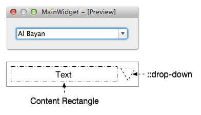
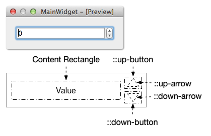
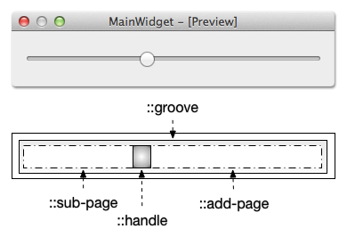
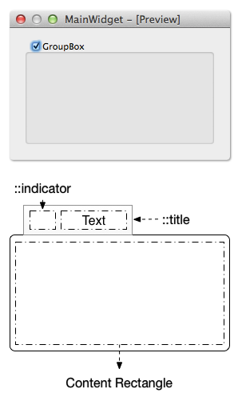

普通的 QSS 和 CSS 没什么区别，难度不大，但除此之外，想要使用好 QSS，还必须得掌握好 subcontrol，这个在 CSS 里没有，是 Qt 独有的。
什么是 subcontrol？一个复杂的 widget 由多个部分组成，它们可以是一个 widget，也可以是逻辑上的部件，例如 QCheckBox 由 icon 和 text 两个部分组成，不仅可以定义 text 的样式，还可以定义 icon 相关的样式，icon 部分就是 QCheckBox 的 subcontrol ::indicator。
在 Qt 的帮助文档里有所有 subcontrol 的说明，但是相信很多人看了还是不明白每个 subcontrol 具体是什么，这一节将使用可视化的方式标记出 subcontrol，介绍使用 QSS 自定义有 subcontrol 的常用 widget，这里的重心是怎么去 QSS subcontrol 而不是样式效果，复杂漂亮的界面需要大量的图片和更多的 QSS，这里不作介绍，以免陷入细节，掩盖本节主题。只要知道了原理，结合已经掌握的 QSS，找美工提供一套界面切图，就能很容易实现出来很专业效果了。
Subcontrol 的 QSS 和大多数 widget 的差不多，也支持盒子模型，可以自定义 color, background, background-color, background-image, border, padding, margin, width, height 等，也支持 Pseudo-States。
Subcontrol 的绘制位置由 subcontrol-origin、subcontrol-position, top, left 来指定，就先从这几个属性开始入手。
Subcontrol-Origin subcontrol-origin 定义在 parent widget 中绘制 subcontrol 的参考矩形，默认在 padding 的矩形中绘制。
The origin rectangle of the subcontrol within the parent element.
subcontrol-origin 有 4 个值可选：
margin
border
padding
content
下图展示了 subcontrol-origin 的值不同时，在 parent widget 的不同位置进行绘制 subcontrol：
Subcontrol-Position 已经知道 subcontrol 要在 parent widget 的某个矩形区域里绘制，如 padding rectangle，这个矩形这么大，具体要在这个矩形的哪个位置绘制呢？使用 subcontrol-position 来指定，相对于 subcontrol-origin。不同的 subcontrol 的 subcontrol-position 默认值不同，例如 QSlider 的 handle 的默认值是 center center，QSpinBox 的 up-button 的默认值是 right top。
The alignment of the subcontrol within the origin rectangle specified by subcontrol-origin.
subcontrol-position 水平方向有 3 个值可选：
subcontrol-position 垂直方向有 3 个值可选：
用 Top 和 Left 微调 Subcontrol 的位置 Top 和 left 的主要作用是 :hover，:pressed 等发生时，用 top 和 left 偏移一点 subcontrol，这样就看到 subcontrol 的鼠标动作了，偏移是相对于 subcontrol-orign 和 subcontrol-position 确定的位置，top 和 left 的默认值是 0。
用下面的 QSS 总结一下 subcontrol-origin, subcontrol-position, top, left：
QSpinBox 的 up-button 放置在 QSpinBox 的左边垂直剧中
当鼠标放到 up-button 上时，将其向右下角偏移 1px
当鼠标离开 up-button 后，up-button 移回到原来的位置
1 2 3 4 5 6 7 8 9 QSpinBox::up-button { subcontrol-origin: margin; subcontrol-position : left center; } QSpinBox::up-button:hover { top: 1px ; left : 1px ; }
接下来就具体的介绍每一个 Widget 有哪些 subcontrol，怎么 QSS 它们。
QCheckBox QCheckBox 的 subcontrol 有 ::indicator，比较有意思的是，text 总是显示在 indicator 右边，所以如果 indicator 靠右边显示的话，text 很可能就看不到了。
QRadioButton 的 QSS 和 QCheckBox 的一样，所以就不在重复介绍。
下面 QSS 的效果如图：
1 2 3 4 5 6 7 8 9 10 11 12 13 14 15 16 17 18 QCheckBox { color : lightgray; background : rgb (44 , 44 , 44 ); border : 10px solid rgb (76 , 76 , 76 ); spacing: 10px ; padding : 10px ; } QCheckBox::indicator { subcontrol-origin: border; subcontrol-position : left center; background : white; border : 2px solid rgb (170 , 170 , 170 ); } QCheckBox::indicator:checked { background: rgb (76 , 76 , 76 ); }
修改 subcontrol-origin 和 subcontrol-position 为不同的值看看效果是什么。
QComboBox QComboBox 的 subcontrol 有 drop-down。

下面 QSS 的效果如图：
1 2 3 4 5 6 7 8 9 10 11 12 13 14 15 16 17 18 19 20 21 22 23 24 25 26 27 QComboBox { color : lightgray; background : rgb (44 , 44 , 44 ); border : 10px solid rgb (76 , 76 , 76 ); spacing: 10px ; padding : 10px ; } QComboBox::drop-down { width: 15px ; height : 10px ; subcontrol-origin: border; subcontrol-position : right center; background : white; border : 2px solid rgb (170 , 170 , 170 ); border-radius : 3px ; } QComboBox::drop-down:hover { background: rgb (76 , 76 , 76 ); } QComboBox::drop-down:on { background: black; top : 1px ; left : 1px ; }
QSpinBox, QDateEdit, QTimeEdit, QDateTimeEdit QSpinBox 的 subcontrol 有 ::up-button, ::down-button, ::up-arrow, ::down-arrow。
up-button 显示在 QSpinBox 里，它的 subcontrol-origin 是相对于 QComboBox 的
down-button 显示在 QSpinBox 里，它的 subcontrol-origin 是相对于 QComboBox 的
up-arrow 显示在 up-button 里，它的 subcontrol-origin 是相对于 up-button 的
down-arrwo 显示在 down-button 里，它的 subcontrol-origin 是相对于 down-button 的

QDateEdit, QTimeEdit, QDateTimeEdit 的 subcontrol 和 QSpinBox 是一样的，只需要把下面 QSS 里的 QSpinBox 换成 QDateEdit，QTimeEdit 或 QDateTimeEdit 即可。
下面 QSS 的效果如图，down-button 靠左垂直居中，up-button 靠右垂直居中：
1 2 3 4 5 6 7 8 9 10 11 12 13 14 15 16 17 18 19 20 21 22 23 24 25 26 27 28 29 30 QSpinBox { color : lightgray; background : rgb (44 , 44 , 44 ); border : 10px solid rgb (76 , 76 , 76 ); padding : 5px ; } QSpinBox::down-button, QSpinBox::up-button { subcontrol-origin: border; width : 16px ; height : 10px ; background : white; border : 2px solid rgb (170 , 170 , 170 ); } QSpinBox::down-button { subcontrol-position: center left; } QSpinBox::up-button { subcontrol-position: center right; } QSpinBox::up-arrow, QSpinBox::down-arrow { subcontrol-origin: content; subcontrol-position : center center; width : 6px ; height : 6px ; background : rgb (76 , 76 , 76 ); }
QSlider QSlider 的 subcontrol 有 ::groove（槽），::handle，::add-page 和 ::sub-page。
groove 显示在 QSlider 里，它的 subcontrol-origin 是相对于 QSlider 的
handle 显示在 groove 里，它的 subcontrol-origin 是相对于 groove 的
sub-page 显示在 groove 里，它的 subcontrol-origin 是相对于 groove 的
add-page 显示在 groove 里，它的 subcontrol-origin 是相对于 groove 的
handle, sub-page, add-page 虽然都显示在 groove 里，但是都可以把它们扩展到 groove 外

下面 QSS 的效果如图：
1 2 3 4 5 6 7 8 9 10 11 12 13 14 15 16 17 18 19 20 21 22 23 24 25 26 27 28 29 30 31 32 33 34 35 36 QSlider { background : rgb (170 , 170 , 170 ); padding : 2px ; height : 40px ; } QSlider::groove:horizontal { subcontrol-origin: content; background : rgb (76 , 76 , 76 ); height : 20px ; } QSlider::handle:horizontal { background-color: rgb (50 , 50 , 50 ); width : 40px ; border-radius : 20px ; margin : -10px 0 ; } QSlider::sub-page:horizontal { background: #999 ; margin : 5px ; border-radius : 5px ; } QSlider::add-page:horizontal { background: #666 ; margin : 5px ; border-radius : 5px ; }
Groove 的默认高度和 QSlider content rectangle 的高度一样，给它一个高度值就可以让他有固定的高度了，把 groove 的 height 去掉试试。
Handle 的默认高度和 groove content rectangle 的高度一样，为了让起显示超出 groove，需要设置 margin 为负值，如果这个负值太小，显示超出 QSlider 的部分将看不到。Handle 的 subcontrol-position 没有作用，因为 handle 不是固定在一个地方的，而是根据 QSlider 的值动态计算显示的位置。
QProgressBar QProgressBar 的 subcontrol 有 ::chunk。
对于 QProgressBar 的 QSS，大多数都是想把 chunk 定义为圆角矩形的样子，但是当它的 value 比较小时，chunk 的圆角会变成直角，即使使用图片都不行，效果很不理想，所以如果要修改 QProgressBar 的外观的话，推荐继承 QProgressBar 自己绘制或者使用 QStyle。
QGroupBox QGroupBox 的 subcontrol 有 ::title 和 ::indicator。
title 相对于 QGroupBox
indicator 的 subcontrol-origin 和 subcontrol-position 自定义无效

下面 QSS 的效果如图：
1 2 3 4 5 6 7 8 9 10 11 12 13 14 15 16 17 18 19 20 21 22 23 24 25 26 27 28 29 QGroupBox { background-color : qlineargradient (x1: 0 , y1: 0 , x2: 0 , y2: 1 , stop: 0 #E0E0E0 , stop: 1 #EEEEEE ); border : 2px solid gray; border-radius : 5px ; margin-top : 10px ; } QGroupBox::title { subcontrol-origin: margin; subcontrol-position : top center; padding : 2px 3px ; color : white; margin-top : 2px ; background-color : gray; border-radius : 3px ; spacing: 5px ; } QGroupBox::indicator { width: 13px ; height : 13px ; border : 1px solid black; background : white; } QGroupBox::indicator:checked { background: yellow; }
QTableView QTableView 相关的 subcontrol 有 QTableView 的 ::item，QHeaderView 的 ::section 和 左上角的 QTableCornerButton 的 ::section。
QTableView 的 QSS 对于 QTableWidget 也是生效的。
下面 QSS 的效果如图：
1 2 3 4 5 6 7 8 9 10 11 12 13 14 15 16 17 18 19 20 21 22 23 24 25 26 27 28 29 30 QTableView, QHeaderView, QTableView::item { background: white; } QTableView::item:alternate { background: rgb (209 , 231 , 254 ); } QTableView::item:selected { /*被选中的index*/ color: black; background : qlineargradient ( x1: 0 , y1: 0 , x2: 0 , y2: 1 , stop: 0 #FAFBFE , stop: 1 #DCDEF1 ); } QHeaderView::section:horizontal, QTableCornerButton::section { background-color: qlineargradient (spread:reflect, x1:0 , y1:0 , x2:0 , y2:1 , stop:0 rgba (255 , 255 , 255 , 255 ), stop:1 rgba (164 , 164 , 164 , 255 )); border : 1px solid rgb (153 , 153 , 153 ); border-width : 0 1px 1px 0 ; } QHeaderView::section:vertical { background: #DDD ; border : 1px solid rgb (153 , 153 , 153 ); border-width : 0 1px 1px 0 ; }
注意: QTableView::item 设置 padding, margin 没有的效果。
QTreeView QTreeView 相关的 subcontrol 有 QHeaderView::section（和上面 QTableView 的 header view 的 QSS 一样，其实就是一个东西），QTreeView::item 和 QTreeView::branch。
QTreeView 的 QSS 对于 QTreeWidget 也是生效的。
QTreeView 的 subcontrol 并不多，但是 branch 有很多种不同的状态，关键就是理解这些状态，不同状态时使用不同的背景，下面 QSS 的效果如图：
1 2 3 4 5 6 7 8 9 10 11 12 13 14 15 16 17 18 19 20 21 22 23 24 25 26 27 28 29 30 31 32 33 34 35 36 37 38 39 40 41 42 43 44 45 46 47 48 49 50 51 52 QHeaderView::section:horizontal { background-color: qlineargradient (spread:reflect, x1:0 , y1:0 , x2:0 , y2:1 , stop:0 rgba (255 , 255 , 255 , 255 ), stop:1 rgba (164 , 164 , 164 , 255 )); border : 1px solid rgb (153 , 153 , 153 ); border-width : 0 1px 1px 0 ; } QTreeView::item { border-bottom: 1px solid lightgray; selection-color : black; } QTreeView::item:selected { /*被选中的index*/ background: qlineargradient ( x1: 0 , y1: 0 , x2: 0 , y2: 1 , stop: 0 #FAFBFE , stop: 1 #DCDEF1 ); } QTreeView::branch { background: yellow; } QTreeView::branch:has-siblings:!adjoins-item { background: cyan; } QTreeView::branch:has-siblings:adjoins-item { background: red; } QTreeView::branch:!has-children:!has-siblings:adjoins-item { background: blue; } QTreeView::branch:closed:has-children:has-siblings { background: black; } QTreeView::branch:has-children:!has-siblings:closed { background: gray; } QTreeView::branch:open:has-children:has-siblings { background: magenta; } QTreeView::branch:open:has-children:!has-siblings { background: green; }
哦，哦，哦……，这一堆 QSS 是不是很熟悉，好像在哪里看到过？那就对了，说明你看书不少，吼吼，就是来源于 Qt 的帮助文档。上面的 QSS 是不实用的，直接这么用到项目里，肯定被咔嚓，但是把各种状态的 branch 标记为不同的颜色，这样在做设计的时候就能很容易的分辨出各种 branch，然后根据需求设计出不同的图片放到对应的 branch。其实 Qt 的帮助文档里对 QTreeView 的 QSS 已经有一个很完善的例子，在 QtCreator 的帮助里搜索 style sheets examples，定位到 Customizing QTreeView 就可以看到这个例子了，开发的时候，照葫芦画瓢的做就可以了：
QTabWidget 相关的 subcontrol 有：
QTabWidget::pane
QTabWidget::tab-bar
QTabBar::tab
QTabBar::close-button
QTabBar::tear
QTabBar::scroller
QTabBar QToolButton::left-arrow
QTabBar QToolButton::right-arrow
不幸的是，在我看来，QTabWidget 还有一些 bug，例如：
QTabBar::close-button 只能定位在 tab 的左边或者右边，不能调整和文本之间的间隔
Tab 互相遮盖的情况下，如我们的例子的样式，拖动 tab 时某些 tab 会被截断
QTabBar::scroller 的定位也是个问题，不能自由定位到需要的位置
QTabBar 和 QTabWidget 不一样宽
下面 QSS 的效果如图：
1 2 3 4 5 6 7 8 9 10 11 12 13 14 15 16 17 18 19 20 21 22 23 24 25 26 27 28 29 30 31 QTabWidget::pane { /* The tab widget frame */ border: 2px solid rgb (69 , 69 , 69 ); margin-top : -2px ; } QTabWidget::tab-bar { left: 5px ; } QTabBar::tab { color: gray; min-width : 40px ; height : 28px ; border-width : 0 18px 0 18px ; border-image : url (:/img/tab-inactive.png ) 0 18 0 18 stretch stretch; } QTabBar::tab:selected { color: #DDD ; height : 28px ; border-width : 0 18px 0 18px ; border-image : url (:/img/tab-active.png ) 0 18 0 18 stretch stretch; } QTabBar::tab:!first { margin-left: -20px ; } QTabBar::tab:hover { color: #DDD ; }
tab-active.png
tab-inactive.png
QTabWidget 的关闭按钮可如下定义样式:
1 2 3 4 5 6 7 QTabBar::close-button { image: url (close.png ); subcontrol-position : left; } QTabBar::close-button:hover { image: url (close-hover.png ) }
QScrollBar 相关的 subcontrol 挺多的，仔细观察的话，有点像 QSpinBox 和 QSlider 的合体：
::sub-line, ::add-line
::sub-page, ::add-page
::up-arrow, ::down-arrow
::left-arrow, ::right-arrow
很多时候并不是每一个 subcontrol 都需要处理的，例如下面的 QSS 中，arrow 没有处理，直接绘制在 ::sub-line 和 ::add-line 的背景里，也没有处理 ::sub-page 和 ::add-page，效果如图：
1 2 3 4 5 6 7 8 9 10 11 12 13 14 15 16 17 18 19 20 21 22 23 24 25 26 27 28 29 30 31 32 33 34 35 36 37 38 39 40 41 42 43 44 45 46 47 48 49 50 51 52 53 54 55 56 57 58 59 60 61 QScrollBar:horizontal { height: 16px ; border-width : 0px 10px 0px 10px ; border-image : url (:/img/horizontal-track.png ) 0 10 0 10 repeat stretch; margin-left : 6px ; margin-right : 16px ; padding-right : 4px ; } QScrollBar::handle:horizontal { min-width: 40px ; border-width : 0 17px 0 17px ; border-image : url (:/img/horizontal-handle.png ) 0 17 0 17 repeat repeat; } QScrollBar::sub-line:horizontal { width: 20px ; height : 17px ; subcontrol-position : left; subcontrol-origin: margin; background-image : url (:/img/horizontal-sub-line.png ) } QScrollBar::add-line:horizontal { width: 20px ; height : 17px ; subcontrol-position : right; subcontrol-origin: border; background-image : url (:/img/horizontal-add-line.png ) } QScrollBar:vertical { width: 16px ; border-width : 10px 0px 10px 0px ; border-image : url (:/img/vertical-track.png ) 10 0 10 0 repeat repeat; margin-top : 6px ; margin-bottom : 16px ; padding-bottom : 6px ; } QScrollBar::handle:vertical { min-height: 40px ; border-width : 17px 0px 17px 0px ; border-image : url (:/img/vertical-handle.png ) 17 0 17 0 repeat repeat; } QScrollBar::sub-line:vertical { width: 17px ; height : 22px ; subcontrol-position : top left; subcontrol-origin: margin; background-image : url (:/img/vertical-sub-line.png ) } QScrollBar::add-line:vertical { width: 17px ; height : 22px ; subcontrol-position : bottom; subcontrol-origin: border; background-image : url (:/img/vertical-add-line.png ) }
QTableView 的 QSS 这里没有给出，请参考上面 QTableView 的 subcontrol 的内容。
QScrollBar 使用的背景图：
有 subcontrol 的常用 widget 基本上介绍完了，相关的 QSS 还有更多的细节都可以在 Qt 的帮助文档里找到，请搜索 style sheet 阅读更多的文档。